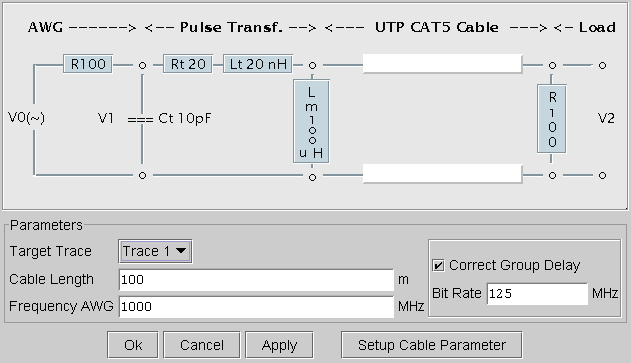
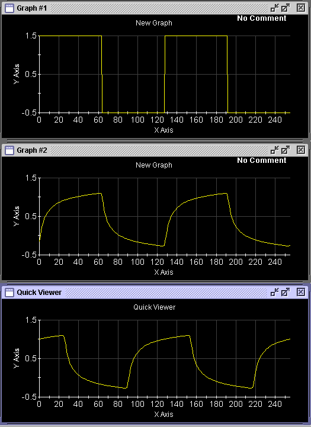
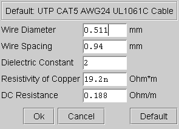

Cable Simulation...
The Cable Simulation function allows you to simulate the effects of various cable characteristics. This is useful, for example, when testing LAN devices. As an example, the ANSI standard requires that 100BASE-T LAN devices be examined to see how they respond to signals from a 100 meter length of twister pair cable. The cable's reactive characteristics affect the rise times, transients and DC levels of the signals.
The Signal Analyzer simulates the cable effects with its Cable Simulation function. This function provides a simulation of the reactive characteristics of the cable. This software-based simulation lets you specify the length of the cable and perform tests for different cable lengths.
Click the Cable Sim button in the Signal Analyzer to simulate the cable effects on an existing waveform. When you click this button, the 100 BASE-T Cable Simulation window appears as shown below.
The Cable Simulation window, lets you determine the cable length and also cable parameters such as the wire diameter, the dielectric constant and the DC resistance of the cable.

The upper part of the window describes the model used by SmartAccess to simulate the reactive characteristics of the cable and the pulse transformer. The values used in this model meet the standard for 100BASE-T transmissions.
The Parameters section prompts you for the following information:
- Cable Length:
Specifies the length in meters of the cable you want to simulate. This value can be up to 100 meters.
- Frequency AWG:
Specifies the AWG sample frequency to generate the distorted signal. This value has to be a multiple of the bit rate of the signal to be generated.
This value must be the same as that specified in the Create Binary Sequence window.
- Bit Rate:
Defines the bit frequency of the distorted signal to be generated.
In order to achieve an acceptable resolution, the sample frequency of the generator must be, at least, twice the bit frequency of the signal.
The number of sampled points per signal cycle is the ratio AWG Frequency/Bit Rate. You reach an acceptable sample resolution when this ratio is 8.
- Correct Group Delay:
Enable this option to correct the time delay that the cable length causes on the transmitted signal.
The figure below shows the effect of this correction on a square wave signal transmitted through a 50 meter cable.

The 100BASE-T Cable Simulation window, lets you determine the cable length and also cable parameters such us the wire diameter, the dielectric constant and the DC resistance of the cable.
You can also enter the cable parameters, which determine the distortion produced by the cable in the signal. To enter these parameters, click the Setup Cable Parameter button in the Cable Simulation window. The Setup Cable Parameter window comes up as shown below. This window shows the cable parameters of a UTP CAT5 cable by default. You can change the following parameter values:
- Wire diameter
- Wire spacing
- Dielectric constant
- Resistivity of the copper
- DC resistance of the cable
